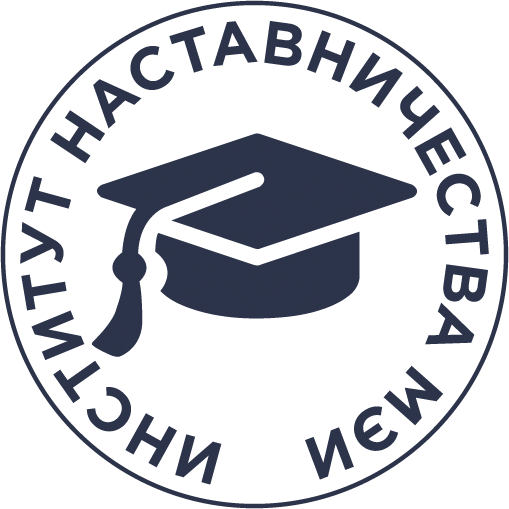

Поддерживать
Помогать первокурсникам освоиться и найти ответы на важные вопросы.

ИН МЭИИнститут наставничества Личный кабинетИнститут наставничества МЭИ
Стань частью сообщества, где студенты поддерживают студентов. Освой новые навыки и помоги первокурсникам увереннее начать путь в МЭИ.
Институт наставничества МЭИ объединяет студентов, готовых делиться опытом и поддерживать тех, кто только знакомится с университетом.
Здесь можно научиться слушать, работать в команде и создавать среду, в которой каждый чувствует себя на своём месте.
Познакомиться с отборомПомогать первокурсникам освоиться и найти ответы на важные вопросы.
Получать опыт общения, организации событий и работы с командой.
Вместе создавать живое студенческое сообщество МЭИ.
Поступай постепенно — команда будет рядом на каждом этапе.
Расскажи о себе, своей учебной группе и опыте.
Выбери свободное время и приходи на интервью.
Познакомься с подходом и подготовься к роли наставника.
Пройди аттестацию и начни помогать другим.
Скоро здесь появятся события программы.
Наставничество начинается с простого: «Я рядом. Давай разберёмся вместе».ИНСТИТУТ НАСТАВНИЧЕСТВА МЭИ
Студенты МЭИ, которым интересно поддерживать других и развиваться вместе с командой. Конкретные условия участия уточняются при наборе.
Нет. На интервью команда познакомится с тобой, а Школа института наставничества поможет подготовиться.
Команда свяжется с тобой и расскажет о следующем этапе отбора. В будущем информацию о статусе можно будет отслеживать в личном кабинете.
Следи за официальными каналами ИН МЭИ и обновлениями этой страницы.
ТВОЯ ИСТОРИЯ МОЖЕТ НАЧАТЬСЯ ЗДЕСЬ
Создай аккаунт, заполни профиль и выбери удобное время для интервью.
Подать заявку Кандидатам доступны личный кабинет, расписание и новости программы.Профиль, статус отбора, расписание интервью и новости ИН МЭИ.